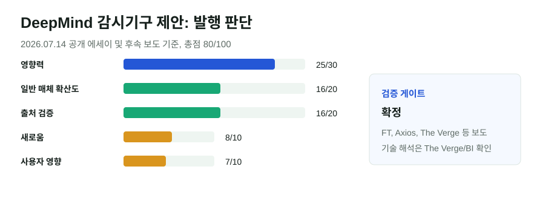

DeepMind의 프런티어 AI 감시기구 제안: 자율규제와 정부검사의 중간지대
Google DeepMind CEO Demis Hassabis가 미국 주도의 프런티어 AI 모델 검증기구를 제안했다. 핵심은 금융업계 FINRA처럼 업계가 비용을 내되, 전문가 기구가 고성능 AI 모델의 사이버·생물안보 위험을 출시 전 점검하는 구조다.
핵심 요약
AI 안전 논의가 “각 회사의 원칙”에서 “공통 검증기관”으로 이동하고 있다
FT, Axios, The Verge, Business Insider는 Hassabis의 에세이와 인터뷰를 바탕으로 미국 주도·업계 재원·전문가 중심의 프런티어 모델 테스트 기구 제안을 보도했다. 아직 제도화된 것은 아니지만, 주요 AI 연구소가 모델 출시 전 외부 검증을 어떻게 받아야 하는지에 대한 논쟁을 다시 키웠다.

선정 이유
이 뉴스는 새 모델 출시보다 제도 설계에 가깝지만, 프런티어 AI 경쟁의 병목이 “성능”만이 아니라 “출시 허가와 안전 검증”으로 이동하고 있음을 보여준다. AI 기업, 정부, 오픈소스 커뮤니티가 같은 검사 규칙을 받아들일 수 있는지가 다음 쟁점이다.
점수표
| 기준 | 점수 | 판단 |
|---|---|---|
| 영향력 | 25/30 | DeepMind CEO가 프런티어 모델 검증 제도 설계를 공개 제안했다. |
| 일반 주요 매체 확산도 | 16/20 | FT, Axios 등 일반·경제 매체가 다뤘다. |
| 신뢰도/출처 검증 | 16/20 | 에세이와 인터뷰 기반 보도이며, 여러 매체가 핵심 구조를 동일하게 전했다. |
| 새로움/중복 회피 | 8/10 | 기존 AI 정부 게이트 글과 이어지지만 DeepMind 제안이라는 새 주제다. |
| 사용자 영향 | 7/10 | 개발자와 기업 사용자는 모델 출시 지연·검증 의무 영향을 받을 수 있다. |
| 블로그 적합도 | 4/5 | 정책·기술 의미를 해설하기 좋다. |
| 이미지/도표화 가능성 | 4/5 | 검증 흐름과 점수표로 설명 가능하다. |
검증표
| 검증 항목 | 결과 | 메모 |
|---|---|---|
| 원문 확인 | 부분 확인 | 보도들은 X·Substack 에세이를 원문으로 지목했다. 별도 공식 DeepMind 블로그 원문은 확인하지 못했다. |
| 독립 확인 | 확정 | FT, Axios, The Verge, Business Insider가 같은 핵심 제안을 보도했다. |
| 전문매체 확인 | 확정 | The Verge와 Business Insider가 기술·정책 의미를 설명했다. |
| 반대 확인 | 확정 | 제안의 제도화 여부, 미국 주도 구조의 국제 수용성, 오픈소스 모델 적용 가능성은 불확실하다. |
| 날짜 확인 | 확정 | 주요 보도는 2026년 7월 14~15일, 이 글 발행은 2026년 7월 16일이다. |
| 수치 확인 | 확정 | 핵심 수치 없음. “연내 출범 희망” 등 일정은 보도 표현으로만 처리했다. |
| 이해관계 | 확정 | 제안자는 주요 프런티어 AI 개발사 CEO이며, 규제 설계의 직접 이해관계자다. |
본문 해설
Hassabis의 제안은 완전한 정부 허가제와 순수 자율규제 사이에 있다. 업계가 비용을 대고 전문가가 테스트하며, 위험이 크면 출시 속도를 늦추는 방식이다. 금융업계의 FINRA를 비유로 든 이유는 정부기관은 아니지만 업계 전반의 규칙과 감시 기능을 맡는 구조를 상상하기 때문이다.
이 제안의 배경에는 프런티어 모델이 사이버 공격, 생물안보, 국가안보 영역에서 더 강해지고 있다는 우려가 있다. 모델을 만든 회사가 자체 평가표만 내놓는 방식은 이해상충을 피하기 어렵고, 반대로 정부가 모든 모델을 직접 검사하면 속도와 전문성 문제가 생긴다. 그래서 업계 공동기구가 중간 해법으로 제시된다.
하지만 아직 제도는 아니다. 미국 주도 기구를 유럽, 중국, 오픈소스 커뮤니티가 받아들일지 불분명하다. 또한 오픈 웨이트 모델처럼 배포 뒤 통제가 어려운 경우에는 사전 검증만으로 충분하지 않을 수 있다. 따라서 이 뉴스의 핵심은 “새 규제가 생겼다”가 아니라 “프런티어 모델 출시의 공통 심사장치를 만들자는 압력이 커졌다”는 점이다.
반대 해석/주의할 점
이 모듈을 넣은 이유는 제안자가 규제 대상인 동시에 시장 지배력이 큰 기업의 CEO이기 때문이다. 공통 검증기구는 안전을 높일 수 있지만, 비용과 절차가 커지면 대형 기업에는 유리하고 작은 연구소나 오픈소스 프로젝트에는 진입장벽이 될 수 있다.
이미지/표 참고 링크
외부 인물 사진과 매체 이미지는 사용하지 않았다. 시각 자료는 자체 제작 SVG이며, 기사 구조와 점수표를 재구성했다.
저작권 주의사항
기사 원문은 요약으로만 처리했다. 에세이 제목과 매체 제목 외 긴 문장 인용은 피했다.
발행 전 확인 포인트
- Hassabis의 원문 에세이 공식 보관 링크가 확인되면 출처에 추가한다.
- 미국 정부나 국제기구가 실제 제도화에 착수하는지 후속 확인이 필요하다.
- 오픈소스 모델과 폐쇄형 모델을 같은 기준으로 검사할 수 있는지 계속 봐야 한다.
출처
- FT: DeepMind chief Demis Hassabis calls for US-led body to test frontier AI models
- Axios: Google DeepMind's Demis Hassabis calls for U.S.-led global AI watchdog
- The Verge: Google's Demis Hassabis says it's time for a global AI watchdog
- Business Insider: Demis Hassabis says humanity has a precious window to ensure AGI is safe